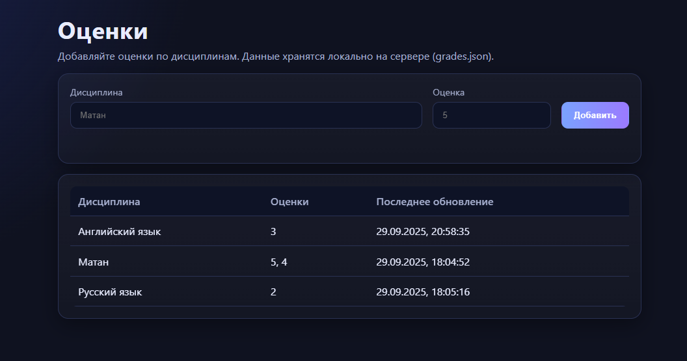
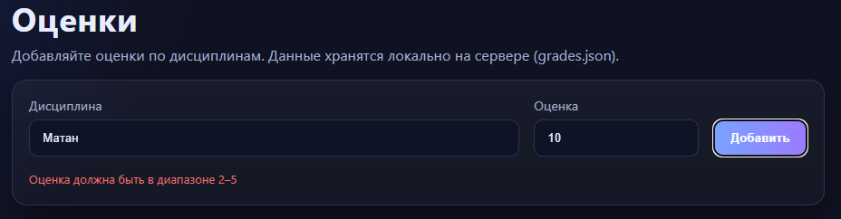
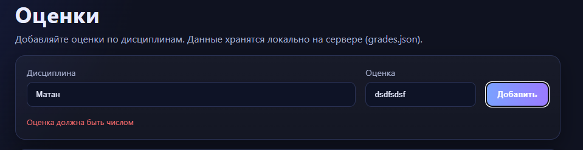

Задание 5: HTTP-сервер с поддержкой GET и POST-запросов
Условие
Необходимо написать простой веб-сервер для обработки GET и POST HTTP-запросов с использованием библиотеки socket.
Требования:
- Сервер должен принимать и записывать информацию о дисциплине и оценке по дисциплине.
- Сервер должен отдавать информацию обо всех оценках в виде HTML-страницы.
Принцип работы
Сервер реализован на языке Go с использованием стандартной библиотеки net. Работа с HTTP протоколом выполнена вручную поверх TCP-сокета.
- При GET /index.html сервер отдает статическую HTML-страницу (шаблон).
- При GET /api/grades возвращается список всех сохранённых дисциплин и их оценок в формате JSON.
- При POST /api/grades сервер принимает данные в формате
application/jsonилиapplication/x-www-form-urlencoded, проверяет их, сохраняет в JSON-файл и возвращает результат. - Все данные об оценках хранятся в файле
grades.json. Это позволяет сохранять введённые значения между перезапусками сервера.
Архитектура решения
Код разбит на несколько логических частей:
-
Хранение данных (
journal)- Используется
map[string]SubjectRecord, где ключ — название дисциплины, а значение — структура с оценками и временем обновления. - Для сохранения состояния данные сериализуются в
grades.json.
- Используется
-
Валидация
- Проверяется корректность введённого предмета (не пустой, не длиннее 100 символов).
- Проверяется корректность оценки (целое число от 2 до 5).
-
Обработка HTTP-запросов
- Запрос разбирается вручную: читается стартовая строка, заголовки и тело.
- Для ответа формируется строка с заголовками и телом ответа.
- Реализована поддержка статических файлов (
/index.html,/assets/...).
-
Маршрутизация
GET /index.html→ отдача HTML-страницы.GET /api/grades→ JSON со всеми предметами и оценками.POST /api/grades→ добавление новой оценки.
Код: https://github.com/exPriceD/TonikX-ITMO_ICT_WebDevelopment_2025-2026/tree/lab1/lab1/5
Пример работы
- Старт сервера
go run ./cmd
- Добавление оценки
Через
curl:
curl -X POST http://127.0.0.1:8080/api/grades \
-H "Content-Type: application/json" \
-d '{"subject":"Математика","grade":5}'
Ответ:
{
"ok": true,
"message": "оценка добавлена"
}
- Получение всех оценок
curl http://127.0.0.1:8080/api/grades
Ответ:
{
"data": {
"Математика": {
"grades": [5],
"updated": "2025-09-29T12:34:56Z"
}
}
}
- Просмотр через браузер
При открытии
http://127.0.0.1:8080/отображается HTML-страница с таблицей оценок.
JSON-файл
Все данные сохраняются в grades.json.
Пример содержимого после нескольких POST-запросов:
{
"Математика": {
"grades": [5, 4],
"updated": "2025-09-29T12:35:20Z"
},
"Физика": {
"grades": [3],
"updated": "2025-09-29T12:36:10Z"
}
}



Тестирование
- Проверена работа с JSON и
application/x-www-form-urlencoded. - Выполнена проверка через браузер и
curl. - Подтверждено сохранение данных в
grades.jsonпосле перезапуска сервера. - Реализована обработка ошибок: неверный метод → 405, неверный запрос → 400, отсутствующий маршрут → 404.
Выводы
- Реализован HTTP-сервер на Go, работающий поверх TCP-сокета без использования встроенного пакета
net/http. - Поддержаны методы GET и POST.
- Данные о дисциплинах и оценках сохраняются в JSON-файл, что обеспечивает их сохранность между перезапусками.
- Сервер корректно обслуживает как API-запросы, так и выдачу статической HTML-страницы.